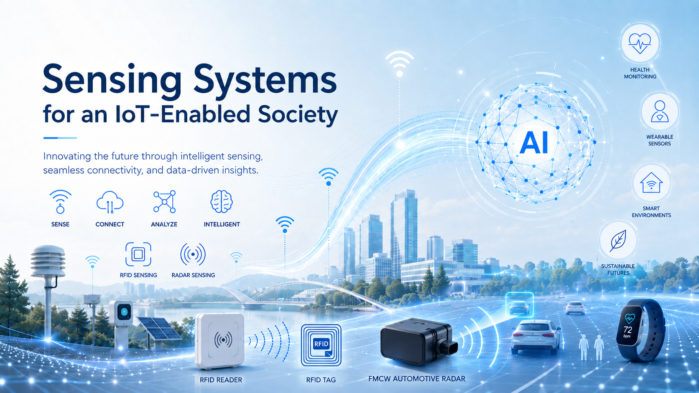

Advantages
Our laboratory develops sensing systems for an IoT-enabled society by integrating sensor technologies, data processing, and artificial intelligence. We welcome motivated students and researchers with interests in mathematics, physics, sensors, and related fields to join our research team.

Research Areas
Area 1: RFID
RFID sensor design, wireless sensing, and indoor localization.
Area 2: FMCW radar
FMCW radar sensing technology for indoor environmental, and reverse ray tracing.
News
- Apr. 2026 New B4 students.
- May. 2026 International Visiting event.